Fusionchart의 'Combination' 타입을 확인할 수 있는 예제입니다. 차트의 타입은 'changeType' 메소드를 사용하여 설정할 수 있습니다.
이 예제의 Fusion Chart 버전은 3.19입니다.
FusionChart 가이드 : https://www.fusioncharts.com/dev/fusioncharts
FusionChart의 타입 목록 : https://www.fusioncharts.com/dev/chart-guide/list-of-charts/
스크립트로 'Combination Single Y Axis Charts' 타입의 차트 변경하기
스크립트로 'Combination Dual Y Axis Charts' 타입의 차트 변경하기
스크립트로 'Multi-series Stacked Combination Charts' 타입의 차트 변경하기
'Combination Single Y Axis Charts' 영역의 Radio에 변경할 수 있는 차트 타입이 구성되어 있습니다. 항목을 선택(클릭)하면 차트 타입이 변경됩니다.
1
CASE 1. 'Multi-series 2D Single Y Combination Chart (Column + Line + Area)' 타입
Image 1.브라우저(Chrome) 실행 예시 - 'Multi-series 2D Single Y Combination Chart (Column + Line + Area)' 타입
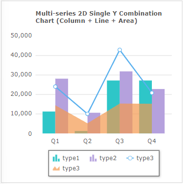
2
CASE 2. 'Multi-series 3D Single Y Combination Chart (Column + Line + Area)' 타입
Image 2.브라우저(Chrome) 실행 예시 - 'Multi-series 3D Single Y Combination Chart (Column + Line + Area)' 타입
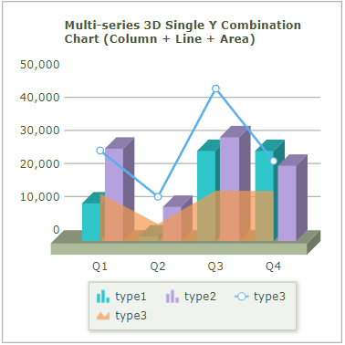
3
CASE 3. 'Multi-series Column 3D + Line - Single Y Axis' 타입
Image 3.브라우저(Chrome) 실행 예시 - 'Multi-series Column 3D + Line - Single Y Axis' 타입
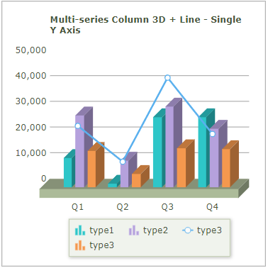
4
CASE 4. 'Stacked Column2D + Line Single Y Axis' 타입
Image 4.브라우저(Chrome) 실행 예시 - 'Stacked Column2D + Line Single Y Axis' 타입
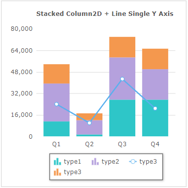
5
CASE 5. 'Stacked Column3D + Line Single Y Axis' 타입
Image 5.브라우저(Chrome) 실행 예시 - 'Stacked Column3D + Line Single Y Axis' 타입
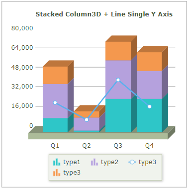
'Combination Dual Y Axis Charts' 영역의 Radio에 변경할 수 있는 차트 타입이 구성되어 있습니다. 항목을 선택(클릭)하면 차트 타입이 변경됩니다.
1
CASE 1. 'Multi-series 2D Dual Y Combination Chart (Column + Line + Area)' 타입
Image 6.브라우저(Chrome) 실행 예시 - 'Multi-series 2D Dual Y Combination Chart (Column + Line + Area)' 타입
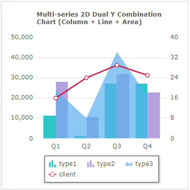
2
CASE 2. 'Multi-series 3D Dual Y Combination Chart (Column + Line + Area)' 타입
Image 7.브라우저(Chrome) 실행 예시 - 'Multi-series 3D Dual Y Combination Chart (Column + Line + Area)' 타입
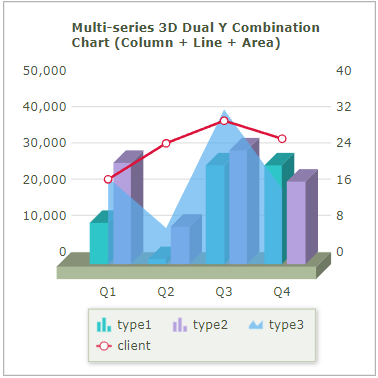
3
CASE 3. 'Multi-series Column 3D + Line - Dual Y Axis' 타입
Image 8.브라우저(Chrome) 실행 예시 - 'Multi-series Column 3D + Line - Dual Y Axis' 타입
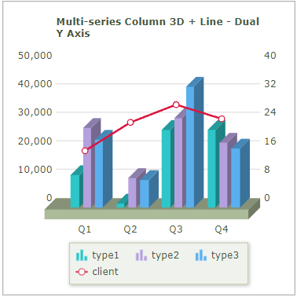
4
CASE 4. 'Stacked Column2D + Line Dual Y Axis' 타입
Image 9.브라우저(Chrome) 실행 예시 - 'Stacked Column2D + Line Dual Y Axis' 타입
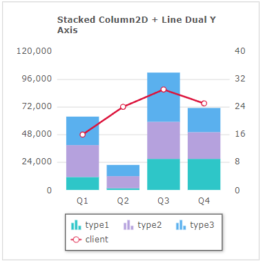
5
CASE 5. 'Stacked Column 3D + Line Dual Y Axis' 타입
Image 10.브라우저(Chrome) 실행 예시 - 'Stacked Column 3D + Line Dual Y Axis' 타입
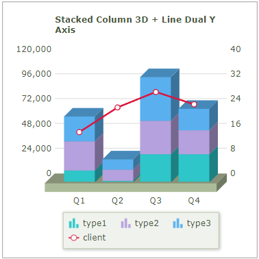
6
CASE 6. 'Stacked Area + Line Dual Y Axis' 타입
Image 11.브라우저(Chrome) 실행 예시 - 'Stacked Area + Line Dual Y Axis' 타입
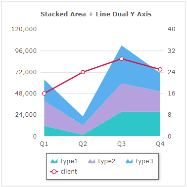
'Multi-series Stacked Combination Charts' 영역의 Radio에 변경할 수 있는 차트 타입이 구성되어 있습니다. 항목을 선택(클릭)하면 차트 타입이 변경됩니다.
1
CASE 1. 'Multi-series Stacked Column 2D + Line Dual Y Axis' 타입
Image 12.브라우저(Chrome) 실행 예시 - 'Multi-series Stacked Column 2D + Line Dual Y Axis' 타입
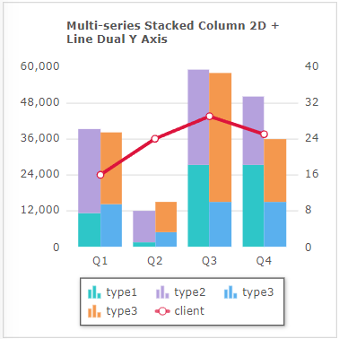
FusionChart의 'changeType' 메소드를 사용하여 스크립트를 작성합니다.
Example 1.Script
// 'Combination Single Y Axis Charts' 타입 변경 예시) // Fucionchart의 속성 'seriesColumns' 예시) [['type1','type2',{'id':'type3','renderas':'Line'},{'id':'type4','renderas':'area'}]] // Fusionchart 'cht_exam1'의 차트 타입을 'Multi-series 2D Single Y Combination Chart (Column + Line + Area)'로 변경합니다. cht_exam1.changeType('mscombi2d'); // Fusionchart 'cht_exam1'의 차트 타입을 'Multi-series 3D Single Y Combination Chart (Column + Line + Area)'로 변경합니다. cht_exam1.changeType('mscombi3d'); // Fusionchart 'cht_exam1'의 차트 타입을 'Multi-series Column 3D + Line - Single Y Axis'로 변경합니다. cht_exam1.changeType('mscolumnline3d'); // Fusionchart 'cht_exam1'의 차트 타입을 'Stacked Column2D + Line Single Y Axis'로 변경합니다. // cht_exam1.changeType('stackedcolumn2dline'); // Fusionchart 'cht_exam1'의 차트 타입을 'Stacked Column3D + Line Single Y Axis'로 변경합니다. cht_exam1.changeType('stackedcolumn3dline');
Example 2.Source
<w2:fusionchart chartType="MSCombi2D" id="cht_exam1" labelNode="quarter" seriesColumns="[['type1','type2',{'id':'type3','renderas':'Line'},{'id':'type4','renderas':'area'}]]" ref="data:dlt_chartData_1" drawType="javascript"> </w2:fusionchart>
Example 3.DataList 'dlt_chartData_1'의 JSON 유형의 데이터
[
{
"quarter": "Q1",
"type1": "11500",
"type2": "28110",
"type3": "23990",
"type4": "14400"
},
{
"quarter": "Q2",
"type1": "1500",
"type2": "10600",
"type3": "10000",
"type4": "5200"
},
{
"quarter": "Q3",
"type1": "27400",
"type2": "31800",
"type3": "42800",
"type4": "15300"
},
{
"quarter": "Q4",
"type1": "27400",
"type2": "22900",
"type3": "20800",
"type4": "15200"
}
]FusionChart의 'changeType' 메소드를 사용하여 스크립트를 작성합니다.
Example 4.Script
// 'Combination Dual Y Axis Charts' 타입 변경 예시)// Fucionchart의 속성 'seriesColumns' 예시) [['type1','type2',{'id':'type3','renderas':'area'}, {'id':'client','renderas':'line', 'color' : '#DC143C', 'parentYAxis': 'S'}]] // Fusionchart 'cht_exam2'의 차트 타입을 'Multi-series 3D Dual Y Combination Chart (Column + Line + Area)'로 변경합니다. cht_exam2.changeType('mscombidy3d'); // Fusionchart 'cht_exam2'의 차트 타입을 'Multi-series Column 3D + Line - Dual Y Axis'로 변경합니다. cht_exam2.changeType('mscolumn3dlinedy'); // Fusionchart 'cht_exam2'의 차트 타입을 'Stacked Column2D + Line Dual Y Axis'로 변경합니다. cht_exam2.changeType('stackedcolumn2dlinedy'); // Fusionchart 'cht_exam2'의 차트 타입을 'Stacked Column 3D + Line Dual Y Axis'로 변경합니다. cht_exam2.changeType('stackedcolumn3dlinedy'); // Fusionchart 'cht_exam2'의 차트 타입을 'Stacked Area + Line Dual Y Axis'로 변경합니다. cht_exam2.changeType('stackedarea2dlinedy');
Example 5.Source
<w2:fusionchart chartType="MSCombiDY2D" id="cht_exam2" labelNode="quarter" seriesColumns="[['type1','type2',{'id':'type3','renderas':'area'}, {'id':'client','renderas':'line', 'color' : '#DC143C', 'parentYAxis': 'S'}]]" ref="data:dlt_chartData_1" drawType="javascript"> </w2:fusionchart>
Example 6.DataList 'dlt_chartData_1'의 JSON 유형의 데이터
[
{
"quarter": "Q1",
"type1": "11500",
"type2": "28110",
"type3": "23990",
"type4": "14400",
"client": "16"
},
{
"quarter": "Q2",
"type1": "1500",
"type2": "10600",
"type3": "10000",
"type4": "5200",
"client": "24"
},
{
"quarter": "Q3",
"type1": "27400",
"type2": "31800",
"type3": "42800",
"type4": "15300",
"client": "29"
},
{
"quarter": "Q4",
"type1": "27400",
"type2": "22900",
"type3": "20800",
"type4": "15200",
"client": "25"
}
]FusionChart의 'changeType' 메소드를 사용하여 스크립트를 작성합니다.
Example 7.Script
// 'Multi-series Stacked Combination Charts' 타입 변경 예시) // Fucionchart의 속성 'seriesColumns' 예시) [['type1', 'type2'], ['type4', 'type3'], [{ 'id': 'client', 'color': '#DC143C', 'parentYAxis': 'S', 'linethickness': '3' }]] // Fusionchart 'cht_exam3'의 차트 타입을 'Multi-series Stacked Column 2D + Line Dual Y Axis'로 변경합니다. cht_exam3.changeType('msstackedcolumn2dlinedy');
Example 8.Source
<w2:fusionchart chartType="MSStackedColumn2DLineDY" id="cht_exam3" labelNode="quarter" seriesColumns="[['type1', 'type2'], ['type4', 'type3'], [{ 'id': 'client', 'color': '#DC143C', 'parentYAxis': 'S', 'linethickness': '3' }]]" ref="data:dlt_chartData_1" drawType="javascript"> </w2:fusionchart>
Example 9.DataList 'dlt_chartData_1'의 JSON 유형의 데이터
[
{
"quarter": "Q1",
"type1": "11500",
"type2": "28110",
"type3": "23990",
"type4": "14400",
"client": "16"
},
{
"quarter": "Q2",
"type1": "1500",
"type2": "10600",
"type3": "10000",
"type4": "5200",
"client": "24"
},
{
"quarter": "Q3",
"type1": "27400",
"type2": "31800",
"type3": "42800",
"type4": "15300",
"client": "29"
},
{
"quarter": "Q4",
"type1": "27400",
"type2": "22900",
"type3": "20800",
"type4": "15200",
"client": "25"
}
]chartType ( chartType )
setChartAttribute( options )
draw( )